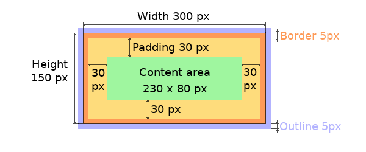

Positions, sizes, and layouts（位置、大小和布局）¶
Overview（概述）¶
查看原文
Similarly to many other parts of LVGL, the concept of setting the coordinates was inspired by CSS. By no means a complete implementation of the standard but subsets of CSS were implemented (sometimes with minor adjustments). In shorts this means:
the set coordinates (size, position, layouts, etc) are stored in styles
support min-width, max-width, min-height, max-height
have pixel, percentage, and "content" units
x=0; y=0 coordinate means the to top-left corner of the parent plus the left/top padding plus border width
width/height means the full size, the "content area" is smaller with padding and border width
a subset of flexbox and grid layouts are supported
与 LVGL 的许多其他部分类似，设置坐标的概念受到 CSS 的启发。绝不是标准的完整实现，而是实现了 CSS 的子集（有时会稍作调整）。 简而言之，这意味着：
设置的坐标（大小、位置、布局等）存储在样式中
支持最小宽度、最大宽度、最小高度、最大高度
有像素、百分比和“内容”单位
x=0; y=0 坐标表示父级的左上角加上左/上填充加上边框宽度
宽度/高度表示全尺寸，“内容区域”较小，填充和边框宽度
支持 flexbox 和网格布局的子集
Units（单位）¶
查看原文
pixel: Simply a position in pixels. A simple integer always means pixel. E.g.
lv_obj_set_x(btn, 10)percentage: The percentage of the size of the object or its parent (depending on the property). The
lv_pct(value)converts a value to percentage. E.g.lv_obj_set_width(btn, lv_pct(50))LV_SIZE_CONTENT: Special value to set the width/height of an object to involve all the children. Its similar toautoin CSS. E.g.lv_obj_set_width(btn, LV_SIZE_CONTENT).
像素：只是一个以像素为单位的位置。一个简单的整数总是意味着像素。例如。
lv_obj_set_x(btn, 10)百分比：对象或其父对象的大小百分比（取决于属性）。
lv_pct(value)将值转换为百分比。例如。lv_obj_set_width(btn, lv_pct(50))LV_SIZE_CONTENT：设置对象的宽度/高度以涉及所有子项的特殊值。它类似于 CSS 中的“auto”。例如。lv_obj_set_width(btn, LV_SIZE_CONTENT)。
Boxing model（盒子模型）¶
查看原文
LVGL follows CSS's border-box model. An object's "box" is built from the following parts:
bounding box: the width/height of the elements.
border width: the width of the border.
padding: space between the sides of the object and its children.
content: the content area which size if the bounding box reduced by the border width and the size of the paddings.
LVGL 遵循 CSS 的 border-box 模型。 对象的“盒子”由以下部分构成：
边界(bounding)框：元素的宽度/高度围起来的区域。
边框(border)宽度：边框的宽度。
填充(padding)：对象两侧与其子对象之间的空间。
内容(content)：如果边界框按边框宽度和填充的大小缩小，则显示其大小的内容区域。

查看原文
The border is drawn inside the bounding box. Inside the border LVGL keeps "padding size" to place the children.
The outline is drawn outside of the bounding box.
边框(border)绘制在边界(bounding)框内。在边界(border)内 LVGL 保持 “填充(padding)大小” 来放置孩子。
轮廓(outline)绘制在边界框之外。
Important notes（重要笔记）¶
查看原文
This section describes special cases in which LVGL's behavior might be unexpected.
本节描述了 LVGL 的行为可能出乎意料的特殊情况。
Postponed coordinate calculation（坐标会被延迟计算）¶
查看原文
LVGL doesn't recalculate all the coordinate changes immediately. This is done to improve performance. Instead, the objects are marked as "dirty" and before redrawing the screen LVGL checks if there are any "dirty" objects. If so it refreshes their position, size and layout.
In other words, if you need to get the any coordinate of an object and it the coordinates were just changed LVGL's needs to be forced to recalculate the coordinates.
To do this call lv_obj_update_layout(obj).
The size and position might depend on the parent or layout. Therefore lv_obj_update_layout recalculates the coordinates of all objects on the screen of obj.
LVGL 不会立即重新计算所有坐标变化。这样做是为了提高性能。 相反，对象被标记为“脏”，并且在重绘屏幕之前 LVGL 检查是否有任何“脏”对象。如果是这样，它会刷新它们的位置、大小和布局。
换句话说，如果您需要获取对象的任何坐标并且坐标刚刚更改，则需要强制 LVGL 重新计算坐标。
为此调用lv_obj_update_layout(obj)。
大小和位置可能取决于父级或布局。因此lv_obj_update_layout重新计算obj屏幕上所有对象的坐标。
Removing styles（删除样式）¶
查看原文
As it's described in the Using styles section the coordinates can be set via style properties too.
To be more precise under the hood every style coordinate related property is stored as style a property. If you use lv_obj_set_x(obj, 20) LVGL saves x=20 in the local style of the object.
It's an internal mechanism and doesn't matter much as you use LVGL. However, there is one case in which you need to aware of that. If the style(s) of an object are removed by
正如使用样式 部分所述，坐标也可以通过样式属性设置。
更准确地说，每个与样式坐标相关的属性都存储为样式属性。如果你使用 lv_obj_set_x(obj, 20) LVGL 将 x=20 保存在对象的本地样式中。
这是一种内部机制，与您使用 LVGL 无关。但是，在一种情况下，您需要了解这一点。如果对象的样式被删除
lv_obj_remove_style_all(obj)
查看原文
or
或者
lv_obj_remove_style(obj, NULL, LV_PART_MAIN);
查看原文
the earlier set coordinates will be removed as well.
For example:
先前设置的坐标也将被删除。
例如：
/*The size of obj1 will be set back to the default in the end*/
lv_obj_set_size(obj1, 200, 100); /*Now obj1 has 200;100 size*/
lv_obj_remove_style_all(obj1); /*It removes the set sizes*/
/*obj2 will have 200;100 size in the end */
lv_obj_remove_style_all(obj2);
lv_obj_set_size(obj2, 200, 100);
Position（位置）¶
Simple way（最简单的方法）¶
查看原文
To simple set the x and y coordinates of an object use
要简单设置对象的 x 和 y 坐标，请使用
lv_obj_set_x(obj, 10);
lv_obj_set_y(obj, 20);
lv_obj_set_pos(obj, 10, 20); //Or in one function
查看原文
By default the the x and y coordinates are measured from the top left corner of the parent's content area.
For example if the parent has 5 pixels padding on every side, the above code will place obj at (15, 25) because the content area starts after the padding.
If percentage values are calculated from the parents content area size.
默认情况下，x 和 y 坐标是从父内容区域的左上角开始测量的。
例如，如果父级每边有 5 个像素的填充，上面的代码会将 obj 放置在 (15, 25) 处，因为内容区域在填充之后开始。
如果百分比值是根据父内容区域大小计算的。
lv_obj_set_x(btn, lv_pct(10)); //x = 10 % of parant content area width
Align（对齐）¶
查看原文
In some cases it's convenient to change the origin of the positioning from the the default top left. If the origin is changed e.g. to bottom-right, the (0,0) position means: align to the bottom-right corner. To change the origin use:
在某些情况下，从默认的左上角更改定位的原点会很方便。如果原点改变，例如到右下角， (0,0) 位置表示：与右下角对齐。 要更改原点使用：
lv_obj_set_align(obj, align);
查看原文
To change the alignment and set new coordinates:
要更改对齐方式并设置新坐标：
lv_obj_align(obj, align, x, y);
查看原文
The following alignment options can be used:
LV_ALIGN_TOP_LEFTLV_ALIGN_TOP_MIDLV_ALIGN_TOP_RIGHTLV_ALIGN_BOTTOM_LEFTLV_ALIGN_BOTTOM_MIDLV_ALIGN_BOTTOM_RIGHTLV_ALIGN_LEFT_MIDLV_ALIGN_RIGHT_MIDLV_ALIGN_CENTER
It quite common to align a children to the center of its parent, there fore is a dedicated function for it:
可以使用以下对齐选项：
LV_ALIGN_TOP_LEFT-LV_ALIGN_TOP_MID-LV_ALIGN_TOP_RIGHT-LV_ALIGN_BOTTOM_LEFT-LV_ALIGN_BOTTOM_MID-LV_ALIGN_BOTTOM_RIGHTLV_ALIGN_LEFT_MID-LV_ALIGN_RIGHT_MID-LV_ALIGN_CENTER
将孩子对齐到其父母的中心是很常见的，因此有一个专门的功能：
lv_obj_center(obj);
//Has the same effect
lv_obj_align(obj, LV_ALIGN_CENTER, 0, 0);
查看原文
If the parent's size changes the set alignment and position of the children is applied again automatically.
The functions introduced above aligns the object to its parent. However it's also possible to align an object to an arbitrary object.
如果父项的大小更改，则会自动再次应用子项的设置对齐方式和位置。
上面介绍的函数将对象与其父对象对齐。但是，也可以将对象与任意对象对齐。
lv_obj_align_to(obj_to_align, reference_obj, align, x, y);
查看原文
Besides the alignments options above the following can be used to align the object outside of the reference object:
LV_ALIGN_OUT_TOP_LEFTLV_ALIGN_OUT_TOP_MIDLV_ALIGN_OUT_TOP_RIGHTLV_ALIGN_OUT_BOTTOM_LEFTLV_ALIGN_OUT_BOTTOM_MIDLV_ALIGN_OUT_BOTTOM_RIGHTLV_ALIGN_OUT_LEFT_TOPLV_ALIGN_OUT_LEFT_MIDLV_ALIGN_OUT_LEFT_BOTTOMLV_ALIGN_OUT_RIGHT_TOPLV_ALIGN_OUT_RIGHT_MIDLV_ALIGN_OUT_RIGHT_BOTTOM
For example to align a label above a button and center the label horizontally:
除了上面的对齐选项之外，以下选项还可用于对齐参考对象之外的对象：
LV_ALIGN_OUT_TOP_LEFTLV_ALIGN_OUT_TOP_MIDLV_ALIGN_OUT_TOP_RIGHTLV_ALIGN_OUT_BOTTOM_LEFTLV_ALIGN_OUT_BOTTOM_MIDLV_ALIGN_OUT_BOTTOM_RIGHTLV_ALIGN_OUT_LEFT_TOPLV_ALIGN_OUT_LEFT_MIDLV_ALIGN_OUT_LEFT_BOTTOMLV_ALIGN_OUT_RIGHT_TOPLV_ALIGN_OUT_RIGHT_MIDLV_ALIGN_OUT_RIGHT_BOTTOM
例如，在按钮上方对齐标签并使标签水平居中：
lv_obj_align_to(label, btn, LV_ALIGN_OUT_TOP_MID, 0, -10);
查看原文
Note that - unlike with lv_obj_align() - lv_obj_align_to() can not realign the object if its coordinates or the reference object's coordinates changes.
请注意 - 与 lv_obj_align() 不同 - lv_obj_align_to() 无法重新对齐对象，如果其坐标或参考对象的坐标发生变化。
Size（大小）¶
Simple way（最简单的方法）¶
查看原文
The width and the height of an object can be set easily as well:
对象的宽度和高度也可以轻松设置：
lv_obj_set_width(obj, 200);
lv_obj_set_height(obj, 100);
lv_obj_set_size(obj, 200, 100); //Or in one function
查看原文
Percentage values are calculated based on the parent's content area size. For example to set the object's height to the screen height:
百分比值是根据父内容区域的大小计算的。例如将对象的高度设置为屏幕高度：
lv_obj_set_height(obj, lv_pct(100));
查看原文
Size setting supports a value: LV_SIZE_CONTENT. It means the object's size in the respective direction will be set to the size of its children.
Note that only children on the right and bottom will be considered and children on the top and left remain cropped. This limitation makes the behavior more predictable.
Objects with LV_OBJ_FLAG_HIDDEN or LV_OBJ_FLAG_FLOATING will be ignored by the LV_SIZE_CONTENT calculation.
The above functions set the size of the bounding box of the object but the size of the content area can be set as well. It means the object's bounding box will be larger with the paddings than the set size.
大小设置支持一个值：LV_SIZE_CONTENT。这意味着对象在相应方向上的大小将设置为其子对象的大小。
请注意，只会考虑右侧和底部的子项，而顶部和左侧的子项仍会被裁剪。此限制使行为更可预测。
带有 LV_OBJ_FLAG_HIDDEN 或 LV_OBJ_FLAG_FLOATING 的对象将被 LV_SIZE_CONTENT 计算忽略。
上述函数设置对象边界框的大小，但也可以设置内容区域的大小。这意味着对象的边界框将比设置的大小更大。
lv_obj_set_content_width(obj, 50); //The actual width: padding left + 50 + padding right
lv_obj_set_content_height(obj, 30); //The actual width: padding top + 30 + padding bottom
查看原文
The size of the bounding box and the content area can be get with the following functions:
可以使用以下函数获取边界框和内容区域的大小：
lv_coord_t w = lv_obj_get_width(obj);
lv_coord_t h = lv_obj_get_height(obj);
lv_coord_t content_w = lv_obj_get_content_width(obj);
lv_coord_t content_h = lv_obj_get_content_height(obj);
Using styles（使用样式）¶
查看原文
Under the hood the position, size and alignment properties are style properties. The above described "simple functions" hide the style related code for the sake of simplicity and set the position, size, and alignment properties in the local styles of the obejct.
However, using styles as to set the coordinates has some great advantages:
It makes it easy to set the width/height/etc for several objects together. E.g. make all the sliders 100x10 pixels sized.
It also makes possible to modify the values in one place.
The values can be overwritten by other styles. For example
style_btnmakes the object100x50by default but addingstyle_full_widthoverwrites only the width of the object.The object can have different position or size in different state. E.g. 100 px wide in
LV_STATE_DEFAULTbut 120 px inLV_STATE_PRESSED.Style transitions can be used to make the coordinate changes smooth.
在驱动中，位置、大小和对齐属性是样式属性。 上面描述的“简单函数”为了简单起见隐藏了样式相关的代码，并在对象的局部样式中设置了位置、大小和对齐属性。
但是，使用样式设置坐标有一些很大的优点：
可以轻松地为多个对象设置宽度/高度/等。例如。使所有滑块的大小为 100x10 像素。
还可以在一处修改值。
这些值可以被其他样式覆盖。例如
style_btn默认使对象100x50，但添加style_full_width只会覆盖对象的宽度。物体在不同状态下可以有不同的位置或大小。例如。
LV_STATE_DEFAULT中的宽度为 100 像素，而LV_STATE_PRESSED中的宽度为 120 像素。样式转换可用于使坐标变化平滑。
查看原文
Here are some examples to set an object's size using a style:
以下是一些使用样式设置对象大小的示例：
static lv_style_t style;
lv_style_init(&style);
lv_style_set_width(&style, 100);
lv_obj_t * btn = lv_btn_create(lv_scr_act());
lv_obj_add_style(btn, &style, LV_PART_MAIN);
查看原文
As you will see below there are some other great features of size and position setting. However, to keep the LVGL's API lean only the most common coordinate setting features have a "simple" version and the more complex features can be used via styles.
正如您将在下面看到的，还有一些其他重要的尺寸和位置设置功能。 然而，为了保持 LVGL 的 API 精简，只有最常见的坐标设置功能有一个 “简单” 版本，更复杂的功能可以通过样式使用。
Translation（风格样式转换）¶
查看原文
Let's say the there are 3 buttons next to each other. Their position is set as described above. Now you want to move a buttons up a little when it's pressed.
One way to achieve this is setting a new Y coordinate for pressed state:
假设有 3 个按钮彼此相邻。它们的位置如上所述设置。 现在您想在按下按钮时将其向上移动一点。
实现此目的的一种方法是为按下状态设置新的 Y 坐标：
static lv_style_t style_normal;
lv_style_init(&style_normal);
lv_style_set_y(&style_normal, 100);
static lv_style_t style_pressed;
lv_style_init(&style_pressed);
lv_style_set_y(&style_pressed, 80);
lv_obj_add_style(btn1, &style_normal, LV_STATE_DEFAULT);
lv_obj_add_style(btn1, &style_pressed, LV_STATE_PRESSED);
lv_obj_add_style(btn2, &style_normal, LV_STATE_DEFAULT);
lv_obj_add_style(btn2, &style_pressed, LV_STATE_PRESSED);
lv_obj_add_style(btn3, &style_normal, LV_STATE_DEFAULT);
lv_obj_add_style(btn3, &style_pressed, LV_STATE_PRESSED);
查看原文
It works but it's not really flexible because the pressed coordinate is hard-coded. If the buttons are not at y=100 style_pressed won't work as expected. To solve this translations can be used:
它可以工作，但不是很灵活，因为按下的坐标是硬编码的。如果按钮不在 y=100 处，style_pressed 将不会按预期工作。要解决这个问题，可以参考使用以下转换：
static lv_style_t style_normal;
lv_style_init(&style_normal);
lv_style_set_y(&style_normal, 100);
static lv_style_t style_pressed;
lv_style_init(&style_pressed);
lv_style_set_translate_y(&style_pressed, -20);
lv_obj_add_style(btn1, &style_normal, LV_STATE_DEFAULT);
lv_obj_add_style(btn1, &style_pressed, LV_STATE_PRESSED);
lv_obj_add_style(btn2, &style_normal, LV_STATE_DEFAULT);
lv_obj_add_style(btn2, &style_pressed, LV_STATE_PRESSED);
lv_obj_add_style(btn3, &style_normal, LV_STATE_DEFAULT);
lv_obj_add_style(btn3, &style_pressed, LV_STATE_PRESSED);
查看原文
Translation is applied from the current position of the object.
Percentage values can be used in translations as well. The percentage is relative to the size of the object (and not to the size of the parent). For example lv_pct(50) will move the object with half of its width/height.
The translation is applied after the layouts are calculated. Therefore, even the layouted objects' position can be translated.
The translation actually moves the object. It means it makes the scrollbars and LV_SIZE_CONTENT sized objects react to the position change.
从对象的当前位置开始应用平移。
百分比值也可用于翻译。百分比是相对于对象的大小（而不是父对象的大小）。例如，lv_pct(50) 将移动对象的宽度/高度的一半。
在计算布局后应用翻译。因此，甚至可以平移布局对象的位置。
平移实际上移动了对象。这意味着它使滚动条和 LV_SIZE_CONTENT 大小的对象对位置变化做出反应。
Transformation（转换）¶
查看原文
Similarly to the position the size can be changed relative to the current size as well. The transformed width and height are added on both sides of the object. This means 10 px transformed width makes the object 2x10 pixel wider.
Unlike position translation, the size transformation doesn't make the object "really" larger. In other words scrollbars, layouts, LV_SIZE_CONTENT will not consider the transformed size.
Hence size transformation if "only" a visual effect.
This code makes the a button larger when it's pressed:
与位置类似，大小也可以相对于当前大小进行更改。 转换后的宽度和高度会添加到对象的两侧。这意味着 10 px 转换宽度使对象更宽 2x10 像素。
与位置平移不同，尺寸变换不会使对象“真正”变大。换句话说，滚动条、布局、LV_SIZE_CONTENT 不会考虑转换后的大小。
因此，如果“仅”是视觉效果，则尺寸转换。
此代码使下面示例的按钮在按下时变大：
static lv_style_t style_pressed;
lv_style_init(&style_pressed);
lv_style_set_transform_width(&style_pressed, 10);
lv_style_set_transform_height(&style_pressed, 10);
lv_obj_add_style(btn, &style_pressed, LV_STATE_PRESSED);
Min and Max size（最小和最大尺寸）¶
查看原文
Similarly to CSS, LVGL also support min-width, max-width, min-height and max-height. These are limits preventing an object's size to be smaller/larger then these values.
They are especially useful if the size is set by percentage or LV_SIZE_CONTENT.
与 CSS 类似，LVGL 也支持 min-width、max-width、min-height 和 max-height。这些是防止对象的大小小于/大于这些值的限制。
如果大小按百分比或LV_SIZE_CONTENT 设置，则它们特别有用。
static lv_style_t style_max_height;
lv_style_init(&style_max_height);
lv_style_set_y(&style_max_height, 200);
lv_obj_set_height(obj, lv_pct(100));
lv_obj_add_style(obj, &style_max_height, LV_STATE_DEFAULT); //Limit the height to 200 px
查看原文
Percentage values can be used as well which are relative to the size of the parent's content area size.
也可以使用与父内容区域大小相关的百分比值。
static lv_style_t style_max_height;
lv_style_init(&style_max_height);
lv_style_set_y(&style_max_height, lv_pct(50));
lv_obj_set_height(obj, lv_pct(100));
lv_obj_add_style(obj, &style_max_height, LV_STATE_DEFAULT); //Limit the height to half parent height
Layout（布局）¶
Overview（概述）¶
查看原文
Layouts can update the position and size of an object's children. They can be used to automatically arrange the children into a line or column, or in much more complicated forms.
The position and size set by the layout overwrites the "normal" x, y, width, and height settings.
There is only one function that is the same for every layout: lv_obj_set_layout(obj, <LAYOUT_NAME>) sets the layout on an object.
For the further settings of the parent and children see the documentations of the given layout.
布局可以更新对象子项的位置和大小。它们可用于自动将子项排列成一行或一列，或者以更复杂的形式排列。
布局设置的位置和大小会覆盖“正常”的 x、y、宽度和高度设置。
每个布局只有一个相同的函数：lv_obj_set_layout(obj, <LAYOUT_NAME>) 在对象上设置布局。
有关父级和子级的进一步设置，请参阅给定布局的文档。
Built-in layout¶
查看原文
LVGL comes with two very powerful layouts:
Flexbox
Grid
Both are heavily inspired by the CSS layouts with the same name.
LVGL 带有两个非常强大的布局：
Flexbox(弹性伸缩盒)
Grid(网格)
两者都深受 CSS 布局的启发。
Flags（标志）¶
查看原文
There are some flags that can be used on object to affect how they behave with layouts:
LV_OBJ_FLAG_HIDDENHidden object are ignored from layout calculations.LV_OBJ_FLAG_IGNORE_LAYOUTThe object is simply ignored by the layouts. Its coordinates can be set as usual.LV_OBJ_FLAG_FLOATINGSame asLV_OBJ_FLAG_IGNORE_LAYOUTbut the object withLV_OBJ_FLAG_FLOATINGwill be ignored fromLV_SIZE_CONTENTcalculations.
These flags can be added/removed with lv_obj_add/clear_flag(obj, FLAG);
有一些标志可用于对象以影响它们在布局中的行为：
LV_OBJ_FLAG_HIDDEN隐藏对象从布局计算中被忽略。LV_OBJ_FLAG_IGNORE_LAYOUT该对象被布局简单地忽略。它的坐标可以照常设置。LV_OBJ_FLAG_FLOATING与LV_OBJ_FLAG_IGNORE_LAYOUT相同，但带有LV_OBJ_FLAG_FLOATING的对象将在LV_SIZE_CONTENT计算中被忽略。
可以使用 lv_obj_add/clear_flag(obj, FLAG); 添加/删除这些标志
Adding new layouts（添加新布局）¶
查看原文
LVGL can be freely extended by a custom layouts like this:
LVGL 可以通过这样的自定义布局自由扩展：
uint32_t MY_LAYOUT;
...
MY_LAYOUT = lv_layout_register(my_layout_update, &user_data);
...
void my_layout_update(lv_obj_t * obj, void * user_data)
{
/*Will be called automatically if required to reposition/resize the children of "obj" */
}
查看原文
Custom style properties can be added too that can be get and used in the update callback. For example:
也可以添加可以在更新回调中获取和使用的自定义样式属性。例如：
uint32_t MY_PROP;
...
LV_STYLE_MY_PROP = lv_style_register_prop();
...
static inline void lv_style_set_my_prop(lv_style_t * style, uint32_t value)
{
lv_style_value_t v = {
.num = (int32_t)value
};
lv_style_set_prop(style, LV_STYLE_MY_PROP, v);
}